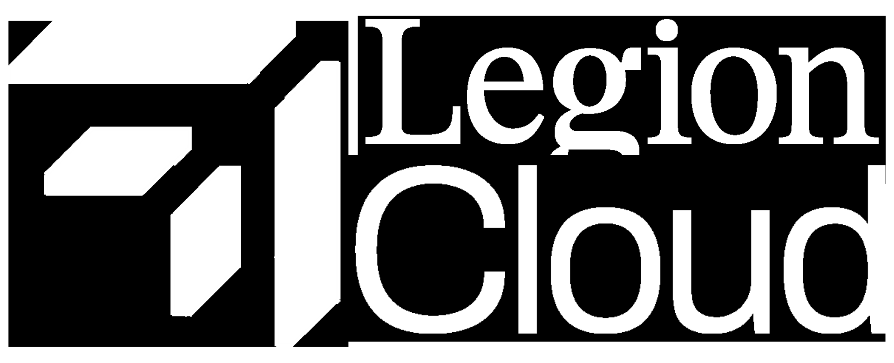

No de la herramienta. Transformamos datos en dominio estratégico.
Diseñamos la transición de sistemas on-premise a entornos híbridos o 100% cloud, asegurando cero pérdida de datos y continuidad operativa.
Traslado de bases de datos y cargas de trabajo críticas sin fricción.
Infraestructura elástica que crece automáticamente con la demanda del negocio.
Arquitecturas optimizadas para pagar solo por el consumo real (FinOps).
Optimización de redes para una respuesta inmediata en mercados globales.
Implementamos ecosistemas de datos centralizados (Data Lakes, Warehouses, Marts) para eliminar silos y democratizar la información.
Una única fuente de verdad para toda la organización.
Control total sobre calidad, acceso y seguridad de la información.
Datos disponibles para los tomadores de decisiones en tiempo real.
Motores de procesamiento capaces de manejar Petabytes de información.
Construcción de pipelines de datos en batch y streaming para alimentar sistemas críticos y modelos analíticos.
Ingesta y procesamiento de datos en tiempo real (Streaming).
Procesos ETL/ELT automatizados y libres de errores manuales.
Integración de fuentes dispares (IoT, CRM, ERP, Legacy).
Monitoreo constante de la salud de los pipelines de datos.
Transformamos datos en predicciones. Desarrollo de modelos de Machine Learning para apoyar la toma de decisiones estratégicas.
Anticipación de tendencias de mercado y comportamiento de usuario.
Reducción de carga operativa mediante agentes y algoritmos.
Motores de recomendación adaptados al cliente final.
Procesamiento avanzado de imágenes y video para industria.
Aseguramos despliegues estables, seguridad blindada y cumplimiento normativo en infraestructuras críticas.
Despliegues continuos sin interrupción del servicio.
Protección de datos sensibles y encriptación de nivel militar.
Gestión programática de servidores (Terraform/Ansible).
Cumplimiento estricto de normativas internacionales de datos.